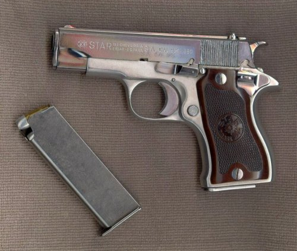
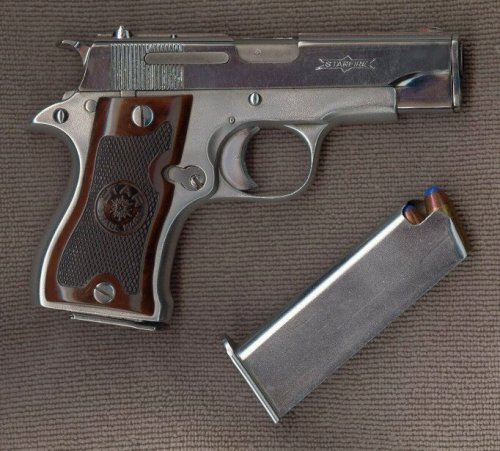

Some Gun Pix
by L. Neil SmithPage 6


I thought folks might be interested to see these pictures of my Star Model DK. It's a .380, and I regret that I neglected to put anything in the pictures to establish scale. At the time I first bought it (used), it was the smallest .380 or .32 made. It has an aluminum frame and is lighter than most .25s I'm familiar with. Star's excellent ergonomic design means that the gun has less felt recoil than the all-steel (and much larger) Walther PPK .32 I used to have.
The weapon fires from a locked breech, identical to that of a 1911, complete with a tiny little swinging link under the barrel and lugs up top that lock into the slide. The Star ignition train is better thought out than on the 1911 (FWIW, it's a younger design), and, as I've said, the safety is immeasurably better, mechanically speaking.
The magazine holds six rounds, and, as you can see, I carry both Glaser Safety Slugs and Winchester SilverTips. The spare magazine is the only aftermarket I've ever tried that works. Not very much power, there, but I've had this little piece with me on most of the adventures in my adult life, and it's one of my very few named guns.
I call her "Estrellita".
The really fun part is that I can point this pistol in the general direction of a man-sized object, look 90 degrees away from the target, pull the trigger, and hit the target. I used to use a 55-gallon oil drum at 25 yards or so. The only other weapon I have that works this well for me is my 4" 1976 ("200th Year of American Liberty") Ruger Security Six.
If you look closely, you can see the slide-lettering reflected from the glass of scanner and again by the chrome of the slide.